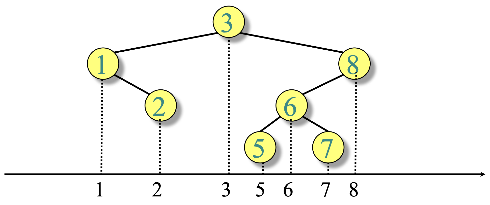
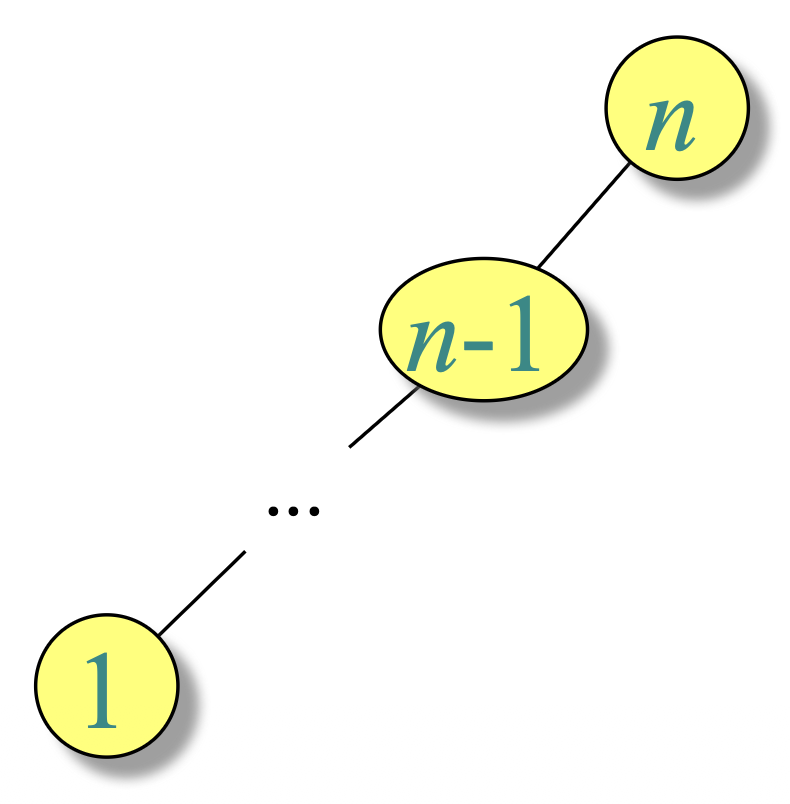

lecture #15

Keeping vertical alignment clarifies in-order positions; unique legal insertion point for key 4 is clear.

Tree shape governs performance of all basic operations.
Follows left/right pointers based on key comparisons.
Running time: \(\Theta(\text{height})\)
TREE-SEARCH(x, k)
if x == NIL or k == x.key
return x
if k < x.key
return TREE-SEARCH(x.left, k)
else
return TREE-SEARCH(x.right, k)
Initial call: TREE-SEARCH(T.root, k)
Running time: \(\Theta(\text{height})\)
TREE-INSERT(T, z)
y = NIL
x = T.root
while x ≠ NIL
y = x
if z.key < x.key
x = x.left
else
x = x.right
z.p = y
if y == NIL
T.root = z // tree T was empty
elseif z.key < y.key
y.left = z
else
y.right = z
Running time: \(\Theta(\text{height})\)
TREE-MINIMUM(x)
while x.left ≠ NIL
x = x.left
return x
TREE-MAXIMUM(x)
while x.right ≠ NIL
x = x.right
return x
Running time: \(\Theta(\text{height})\)
TREE-SUCCESSOR(x)
if x.right ≠ NIL
return TREE-MINIMUM(x.right)
y = x.p
while y ≠ NIL and x == y.right
x = y
y = y.p
return y
Algorithm Inorder-Tree-Walk(x):
if x ≠ NIL:
Inorder-Tree-Walk(x.left)
print x.key
Inorder-Tree-Walk(x.right)
Initial call: Inorder-Tree-Walk(T.root) | Running time: Θ(n)
Algorithm Copy-Tree(x):
if x == NIL: return NIL
y ← new node
y.key ← x.key
y.left ← Copy-Tree(x.left)
y.right ← Copy-Tree(x.right)
return y
Initial call: Copy-Tree(T.root) | Running time: Θ(n)
Algorithm Find-height(x):
if x == NIL: return -1
h1 ← Find-height(x.left)
h2 ← Find-height(x.right)
return max(h1, h2) + 1
Initial call: Find-height(T.root) | Running time: Θ(n)
T ← ∅ # empty BST
for i = 1 to n:
TREE-INSERT(T, A[i])
# prints keys in sorted order
INORDER-TREE-WALK(T.root)
Build time: depends on insertion order; inorder walk is \(O(n)\).
Depth of a node equals number of comparisons during its insertion.
Summing over nodes gives total comparisons; averaging yields expected depth on random permutations.
Average depth = (1/n) · E[total comparisons] = (1/n) · O(n log n) = O(log n).
| Quantity | Expression | Expected Order |
|---|---|---|
| Total comparisons | ∑ depths | O(n log n) |
| Average node depth | (1/n) ∑ depths | O(log n) |
Goal: guarantee \(h = O(\log n)\) for dynamic sets.